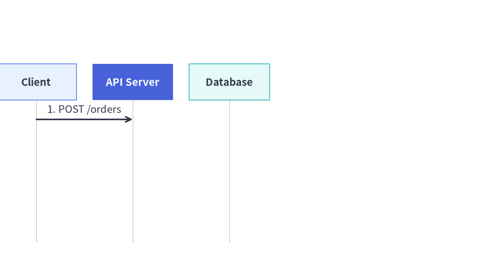

Animating Technical Diagrams
All 6 coordinate-controlled diagram engines in drawlib.diagrams (FlowDiagram, ArchitectureDiagram, SequenceDiagram, StateDiagram, ClassDiagram, and ERDiagram) follow Pattern B (Pre-Build & Mutate):
Source Code
from drawlib.anim import Animation
from drawlib.canvas import save, setup
from drawlib.diagrams.architecture import ArchitectureDiagram, Node, NodeGroup, PhosphorIcon
from drawlib.styles import Styles
setup(width=124, height=46)
anim = Animation(fps=2.0)
d = ArchitectureDiagram(
node_style=Styles.Primary,
node_text_style=Styles.DarkBold.patch(text_size=10.5),
edge_style=Styles.DarkBold,
edge_text_style=Styles.Dark.patch(text_size=10.0),
node_card_style=Styles.Neutral,
)
client = d.add(
Node("Client App", width=24, height=15, icon=PhosphorIcon.LAPTOP, icon_size=6.2, card_style=Styles.Neutral),
xy=(15.0, 21.0),
)
vpc = d.add(NodeGroup(title="Production VPC", padding=4.2, show=False), xy=(46.0, 5.0))
gw = vpc.add(
Node(
"API Gateway",
width=24,
height=15,
icon=PhosphorIcon.SHIELD_CHECK,
icon_size=6.2,
card_style=Styles.PrimaryFlat,
style=Styles.White,
text_style=Styles.WhiteBold.patch(text_size=10.5),
show=False,
),
xy=(16.0, 16.0),
)
svc = vpc.add(
Node(
"Order Service",
width=24,
height=15,
icon=PhosphorIcon.CPU,
icon_size=6.2,
card_style=Styles.PrimaryNeutral,
show=False,
),
xy=(54.0, 16.0),
)
e1 = d.connect(client, gw, label="HTTPS")
e2 = d.connect(gw, svc, label="gRPC")
# Frame 1: Client entry point
with anim.frame(duration=0.7):
d.draw(xy=(2.0, 1.0))
# Frame 2: Reveal VPC container and API Gateway (active focal node)
vpc.show = True
gw.show = True
e1.style = Styles.PrimaryBold
with anim.frame(duration=0.7):
d.draw(xy=(2.0, 1.0))
# Frame 3: Settle Gateway into PrimaryNeutral and highlight Order Service
e1.style = Styles.DarkBold
gw.card_style = Styles.PrimaryNeutral
gw.style = Styles.Primary
gw.text_style = Styles.DarkBold.patch(text_size=10.5)
svc.show = True
svc.card_style = Styles.PrimaryFlat
svc.style = Styles.White
svc.text_style = Styles.WhiteBold.patch(text_size=10.5)
e2.style = Styles.PrimaryBold
with anim.frame(duration=0.7):
d.draw(xy=(2.0, 1.0))
# Frame 4: Completed topology settled with Gateway as primary focal point
e2.style = Styles.DarkBold
svc.card_style = Styles.SecondaryNeutral
svc.style = Styles.Primary
svc.text_style = Styles.DarkBold.patch(text_size=10.5)
gw.card_style = Styles.PrimaryFlat
gw.style = Styles.White
gw.text_style = Styles.WhiteBold.patch(text_size=10.5)
with anim.frame(duration=2.5):
d.draw(xy=(2.0, 1.0))
save()
- Construct Topology Once: Instantiate the diagram and register all nodes, containers, lanes, blocks, notes, and connections once outside the animation loop, keeping references to the returned objects.
- Mutate & Redraw Per Frame: Inside
with anim.frame():, mutate.show,.style,.text_style,.label/.set_label(), or.set_style(), and calld.draw(xy=..., scale=...).
(For declarative auto-layout solvers in drawlib.graph, see Animating Auto-Layout Graphs.)
1. Key Animation Capabilities Across Diagram Engines
| Capability | Target Properties & Objects | How It Works |
|---|---|---|
| Visibility & Automatic Edge / Junction Hiding | node.show, edge.show, group.show, lane.show, block.show, note.show |
Setting node.show = False hides the node and automatically hides all edges connected to it (Edge, Transition, Relationship). For Junction routing points (such as node.fork([t1, t2])) in FlowDiagram and ArchitectureDiagram, the upstream wire entering the junction stays hidden until at least one downstream target from that junction is visible. |
| Dynamic Active-Path Highlighting | node.style, node.text_style, edge.style, edge.text_style |
Reassign node.style = Styles.PrimaryFlat (with Styles.WhiteBold text) and edge.style = Styles.PrimaryBold between frames to highlight active execution paths, then settle visited nodes into calm Styles.PrimaryNeutral. |
| In-Place Label & Style Mutation | msg.set_label(...), msg.set_style(...), note.set_text(...), note.set_style(...), edge.label |
Mutate message labels, note text, or connector styles dynamically across frames without shifting lifelines or node coordinates. |
Structured Containers (Lane, Block, Note) |
flow.add_lane(...) -> Lane, with seq.loop(...) as blk:, seq.note(...) -> Note |
Swimlanes (Lane), sequence condition frames (Block from loop, alt, opt, par), and sticky notes (Note) also return mutable objects with .show and .style. |
| Camera Pan & Zoom | d.draw(xy=(ox, oy), scale=s) |
Passing xy=(ox, oy) and scale=s to draw() translates the diagram origin and scales all coordinates, box dimensions, stroke widths, icons, and font sizes uniformly. |
2. Step-by-Step Node, Junction & Active-Path Walkthrough (FlowDiagram)
By combining node.show (which automatically reveals incident edges and Junction fan-out stems only when targets become visible), node.style, and edge.style mutation, you can animate a request flowing through a pipeline step by step while preserving the 50%+ Neutral color discipline:
from drawlib.anim import Animation
from drawlib.canvas import save, setup
from drawlib.diagrams.flow import Decision, End, FlowDiagram, Process, Start
from drawlib.styles import Styles
setup(width=120, height=34)
anim = Animation(fps=1.5)
# 1. Build topology once outside the loop
flow = FlowDiagram(
node_style=Styles.Neutral,
edge_style=Styles.DarkBold,
edge_text_style=Styles.Dark.patch(text_size=10.0),
)
n1 = flow.add(
Start("Request", width=22, height=11.5, text_style=Styles.DarkBold.patch(text_size=10.5)),
xy=(16, 17),
)
n2 = flow.add(
Process("Authorize", width=25, height=12.5, style=Styles.PrimaryFlat, text_style=Styles.WhiteBold.patch(text_size=10.5)),
xy=(49, 17),
show=False,
)
n3 = flow.add(
Decision("Valid?", width=22, height=13.5, style=Styles.SecondaryNeutral, text_style=Styles.DarkBold.patch(text_size=10.5)),
xy=(80, 17),
show=False,
)
n4 = flow.add(
End("200 OK", width=20, height=11.5, style=Styles.PrimaryFlat, text_style=Styles.WhiteBold.patch(text_size=10.5)),
xy=(106, 17),
show=False,
)
e1 = n1.connect(n2)
e2 = n2.connect(n3)
e3 = n3.connect(n4, label="Yes")
# 2. Frame 1: Initial entry point (e1, e2, e3 are automatically hidden)
with anim.frame(duration=0.8):
flow.draw()
# 3. Frame 2: Reveal Authorize node and highlight incoming edge e1
n2.show = True
e1.style = Styles.PrimaryBold
with anim.frame(duration=0.8):
flow.draw()
# 4. Frame 3: Settle Authorize into PrimaryNeutral, reveal Decision gate, highlight e2
e1.style = Styles.DarkBold
n2.style = Styles.PrimaryNeutral
n2.text_style = Styles.DarkBold.patch(text_size=10.5)
n3.show = True
n3.style = Styles.PrimaryFlat
n3.text_style = Styles.WhiteBold.patch(text_size=10.5)
e2.style = Styles.PrimaryBold
with anim.frame(duration=0.8):
flow.draw()
# 5. Frame 4: Settle Decision gate, reveal 200 OK, highlight e3 (hold final frame)
e2.style = Styles.DarkBold
n3.style = Styles.SecondaryNeutral
n3.text_style = Styles.DarkBold.patch(text_size=10.5)
n4.show = True
e3.style = Styles.PrimaryBold
with anim.frame(duration=2.5):
flow.draw()
save()
3. Camera Pan, Zoom & Progressive Message/Block Reveal (SequenceDiagram)
Every diagram's draw(xy=(x, y), *, scale=s) method shifts the diagram origin to (x, y) and multiplies all coordinates, box sizes, line widths, and font sizes by scale. In SequenceDiagram, participant lifelines and vertical timeline spacing remain 100% locked across frames even when later Message, Block (loop, alt, opt, par), or Note objects have show=False:
from drawlib.anim import Animation
from drawlib.canvas import save, setup
from drawlib.diagrams.sequence import Participant, SequenceDiagram
from drawlib.styles import Styles
setup(width=115, height=62)
anim = Animation(fps=8.0)
seq = SequenceDiagram(
node_style=Styles.Primary,
node_text_style=Styles.DarkBold.patch(text_size=10.5),
edge_style=Styles.DarkBold,
edge_text_style=Styles.Dark.patch(text_size=10.0),
node_card_style=Styles.Neutral,
autonumber=True,
)
client = seq.add(Participant("Client", width=21, height=9.5, card_style=Styles.PrimaryNeutral, text_style=Styles.DarkBold.patch(text_size=10.5)))
api = seq.add(Participant("API Server", width=21, height=9.5, card_style=Styles.PrimaryFlat, text_style=Styles.WhiteBold.patch(text_size=10.5)))
db = seq.add(Participant("Database", width=21, height=9.5, card_style=Styles.SecondaryNeutral, text_style=Styles.DarkBold.patch(text_size=10.5)))
m1 = client.request(api, "POST /orders")
with seq.opt("Idempotent Write", show=False) as blk:
m2 = api.request(db, "INSERT order", show=False)
m3 = api.reply(client, "201 Created", show=False)
# Phase 1: Camera pan & zoom-in onto stage via draw(xy=..., scale=...)
for ox, sc in [(-12, 0.92), (-6, 0.96), (0, 1.0)]:
with anim.frame(duration=0.14):
seq.draw(xy=(ox, 0), scale=sc)
# Phase 2: Reveal opt Block and DB write message with active highlight
blk.show = True
m2.show = True
m2.set_style(Styles.PrimaryBold)
with anim.frame(duration=0.7):
seq.draw()
# Phase 3: Settle m2 and reveal final reply m3 with updated label
m2.set_style(Styles.DarkBold)
m3.show = True
m3.set_label("201 Created (Committed)").set_style(Styles.PrimaryBold)
with anim.frame(duration=2.5):
seq.draw()
save()

4. Tips for ArchitectureDiagram, StateDiagram, ClassDiagram & ERDiagram
ArchitectureDiagram: Togglegroup.showandnode.showto reveal VPCs, subnets, and microservices tier by tier. Whennode.show = False, any attachedEdgeis hidden automatically, and forlb.fork([pod1, pod2])fan-outs, the upstream trunk entering theJunctionstays hidden until at least one target pod is visible.StateDiagram: Togglestate.show/note.showand mutatestate.styleandtransition.styleto walk through state machine lifecycles while keeping all states anchored at their exact coordinates.ClassDiagram&ERDiagram: Reveal domain classes or database tables progressively by togglingcls.showorentity.show(which automatically reveals their UML or Crow's FootRelationshiplines as both endpoints become visible) and highlightingrel.style = Styles.PrimaryBold.
from drawlib.anim import Animation
from drawlib.canvas import save, setup
from drawlib.diagrams.architecture import ArchitectureDiagram, Node, NodeGroup, PhosphorIcon
from drawlib.styles import Styles
setup(width=122, height=62)
anim = Animation(fps=1.5)
d = ArchitectureDiagram(
node_style=Styles.Primary,
node_text_style=Styles.DarkBold.patch(text_size=10.5),
edge_style=Styles.DarkBold,
edge_text_style=Styles.Dark.patch(text_size=10.0),
node_card_style=Styles.Neutral,
)
# 1. External Load Balancer (Visible on Frame 1)
lb = d.add(
Node(
"Load Balancer",
width=26,
height=16,
icon=PhosphorIcon.GLOBE,
icon_size=6.5,
card_style=Styles.PrimaryFlat,
style=Styles.White,
text_style=Styles.WhiteBold.patch(text_size=10.5),
),
xy=(18.0, 31.0),
)
# 2. Private Subnet Group & App Pods (Revealed progressively across frames)
group = d.add(NodeGroup(title="Compute Subnet (group.show)", padding=5.0, show=False), xy=(52.0, 4.0))
app1 = group.add(
Node("App Pod 1", width=24, height=15.5, icon=PhosphorIcon.CPU, icon_size=6.5, card_style=Styles.PrimaryNeutral, show=False),
xy=(28.0, 35.0),
)
app2 = group.add(
Node("App Pod 2", width=24, height=15.5, icon=PhosphorIcon.CPU, icon_size=6.5, card_style=Styles.SecondaryNeutral, show=False),
xy=(28.0, 12.5),
)
# Junction fan-out (automatically stays hidden while app1 & app2 have show=False)
lb.fork([app1, app2], at_x=42.0, padding=1.5)
# Frame 1: Only Load Balancer visible (Junction trunk is automatically hidden)
with anim.frame(duration=0.8):
d.draw(xy=(2.0, 1.0))
# Frame 2: Reveal Subnet container + App Pod 1 (upper fork branch appears automatically)
group.show = True
app1.show = True
with anim.frame(duration=0.8):
d.draw(xy=(2.0, 1.0))
# Frame 3: Reveal App Pod 2 (full 1-to-2 fan-out completed)
app2.show = True
with anim.frame(duration=2.5):
d.draw(xy=(2.0, 1.0))
save()